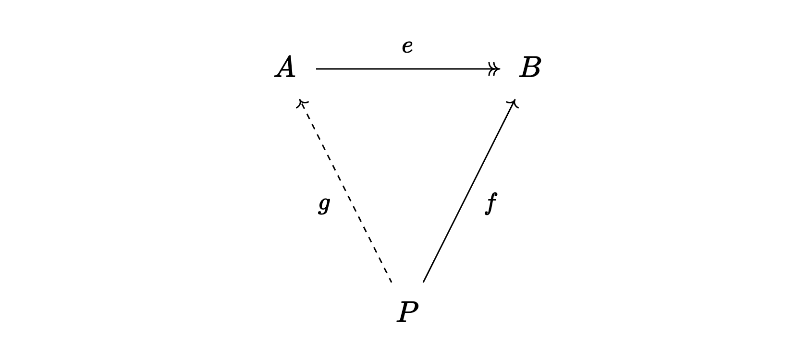

Lawvere’s Characterization of Varieties#
(under construction)
Introduction#
In a previous note on Regular and Exact Categories we said that regular and exact categories generalise quasi-varities and varities.
Lawvere’s theorem turns this analogy into a theorem.
It is important to understand that Lawvere’s theorem takes varieties as abstract categories in the following sense.
Two varieties are considered equivalent if they are equivalent as categories, forgetting the forgetful functors.
Free algebras are not available, since free algebras are defined via left-adjoints to forgetful functors.
The operations and equations defining a variety are not available. In particular, a variety defined by equations is not embedded in a larger one defined by operations only. There is no notion of term algebra (=absolutely free algebra).
From the last point, it follows that the usual condition that separates varieties from quasi-varieties, closure under homomorphic images, is also not available. It is going to be replaced by the condition separating exact categories from merely regular ones, namely effective equivalence relations.
The discussion suggests that it will be important to find a replacement of free algebras that can be defined without access to the forgetful functor. These objects are the so-called projective generators. We will see that every projective generator \(G\) turns an abstract variety \(\mathcal A\) into a concrete one by inducing a forgetful functor \(\mathcal A(G,-)\).
Note that by declaring \(\mathcal A(G,-)\) to be a forgetful functor, \(G\) becomes the free algebra over one generator. Every abstract variety corresponds to a whole class of different concrete varieties.
In the following we will define projective generators and state Lawvere’s theorem as well as its generalization to quasi-varieties.
Preliminary Exercise: Starting from the usual diagrammatic definition of coproduct, prove that it is equivalent to the following implicit definition.
Conclude that
Projective Objects#
Definition: An object \(P\) in a regular category \(\mathcal C\) is regular projective (or just projective for short) if for every regular epi \(e:A\to B\) and for every \(f:P\to B\) there is \(P\to B\) such that
{kind=link}
commutes.
Remark: Although we didn’t make this explicit, one can see that the definition of projective object is parametric in a class of “epis” \(e\). There are various other interesting classes of epis, but in our context we will only be interested in regular epis. Remember that in the context of universal algebra, the regular epis are exactly the surjections.
The following observation is pivotal.
Exercise: Free objects in a (quasi)variety are projective. [1]
Much of what is interesting in the following rests on the fact that while all free objects are projective the converse is not true. But, as alluded to in the introduction, for every projective object there is a forgetful functor that makes it free (even free over one generator).
Exercise: In the category of Boolean algebras, every algebra apart from the trivial (=one element) one is projective.
The previous exercise leads to a more general result:
Exercise: The retract of a free (or just a projective) algebra is projective.
To complete the picture:
Exercise: In a (quasi)variety, the projectives are precisely the retracts of the free algebras.
Question: Which varieties arise from declaring any non-trivial finite Boolean algebra as free over one generator?
Generators#
So far, we found an abstract replacement for free algebras, namely projective objects.
Before we can prove Lawvere’s theorem, we need to capture another property of free algebras:
In every (quasi)variety, every object \(A\) is the quotient of a free algebra. Using the adjunction \(F\dashv U:\mathcal A\to Set\) we can make this more precise. As all adjunctions, this adjunction provides us with a “counit”
It also follows from the definition of adjunction that this counit is a coequalizer[2], hence a regular epi. Moreover, since \(F\) (being a left adjoint) preserves colimits we can write this as
where \(\bullet\), the so-called copower, is the \(|UA|\)-fold coproduct of \(F1\) with itself. What is important here is that all \(FUA\) arise as a coproduct of one single object, which is then the so-called projective generator we are looking for. Technically, it is worth noting that
because \(\bullet\) is a colimit [3] and \(F\) (being a left adjoint) preserves colimits.
Definition: A regular category \(\mathcal C\) has generator \(G\) if for all objects \(C\) there is a set \(X\) and a regular epi \(X\bullet G\to C\). If \(G\) is also projective, it is called a projective generator.
Remark: We will use below that the definition of the copower \(\bullet\), written as an implicit definition in the form of the equation
is exactly saying that \(-\bullet G\) is left adjoint to \(\mathcal C(G,-)\).
Lawvere’s Theorem#
As a stepping stone to Lawvere’s theorem we first prove its variation for quasi-varieties.
… maybe sth on “weak” quasi-varieties (Bloom and Wright, 1982) … a functor \(U: \mathcal A \to Set\) is a weak quasi-variety if \(U\) has a left adjoint and \(U\) preserves and reflects regular epis … iff \(U\) is isomorphic to a category of algebras defined by (possibly infinitary) operations and closed under \(\sf SP\) …
Theorem: A category is equivalent to a quasivariety iff it is regular and has a finitely presentable projective generator.
Proof: Every quasi-variety is regular and has the free algebra over one generator as a projective generator. Conversely, let \(G\) be a projective generator in a regular category \(\mathcal A\). Then \(UA=\mathcal A(G,A)\) has a left adjoint \(FX=X\bullet G\), since the equation defining the adjointness \(F\dashv U\)
coincides in the case at hand with the equation defining the copower \(\bullet\).[4]
This gives us already part of what we need for a quasi-variety. But we still seem far away from obtaining the operations and implications defining the quasi-varitey. Can we extract them from the adjunction?
The answer is yes and relies on an important idea of Lawvere, of independent interest, known as implicit operations. It can be used to show that algebras for a monad are defined by operations and equations and, if the base category (as it is here) is the category of sets, then \({\sf Alg(T)}\) is a category of algebras defined by operations and equations (in the sense of universal algebra).
Given that result, the proof of which we postponed, it remains to show that \(\mathcal A\) is a full subcategory of \({\sf Alg}(T)\) closed under subalgebras and products.
This is what we are going to sketch out now.
The composition \(UF\) has special properties. These properties appear in many different areas of mathematics, logic and computer science and are distilled into the notion of a monad. For now, we only need to know that
every adjunction \(F\dashv U\) gives rise to a monad \(UF\);
every monad \(T\) gives rise to a category of algebras \({\sf Alg}(T)\);[5]
whenever we have an adjunction \(F\dashv U:\mathcal A\to \mathcal X\) there is a comparison functor \(K:\mathcal A\to {\sf Alg}(UF)\), which is compatible with the adjoint functors.
It remains to show that … (to be continued) …
References#
Lawvere’s theorem is Theorem 1 in Chapter 2 of his PhD thesis
Lawvere, Functorial Semantics of Algebraic Theories and Some Algebraic Problems in the context of Functorial Semantics of Algebraic Theories, 1963.

The classic text on universal algebra from a category theoretic point of view is
Manes, Algebraic Theories, 1973.
These notes follow
Kurz, Velebil, , …
which generalizes Lawvere’s theorems to the order-enriched setting. Interestingly, if formulated at the right level of abstraction, the ordinary and the order-enriched case have the same formulation and almost the same proof. The relevant theorems of the paper are Theorem 5.9 and Theorem 5.13.
I also relied on the classic paper
Bloom, Wright Finitary Quasi-Varieties, Journal of Pure and Applied Algebra 25 (1982).
which may still be the best resource on the topic.
nLab:
https://ncatlab.org/nlab/show/projective+object